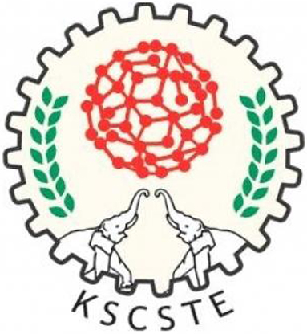

Paper Submission
NCILC-2016 invites original and unpublished papers contain contributions of theoretical, experimental or application nature, or unique experience reports. Papers must be submitted within the stipulated time and electronic submission in PDF is required. The page limit for a full-length paper is 6 pages.
The areas of interest include, but are not limited to:
|
|
All papers that conform to submission guidelines will be peer reviewed and evaluated based on originality, technical and/or research content/depth, correctness, relevance to conference, contributions, and readability. Acceptance of papers will be communicated to authors by email. Accepted and presented papers will be published in the conference proceedings. To be published in the Proceedings, an author of an accepted paper is required to register for the conference at the full rate. All accepted papers MUST be presented at the conference by one of the authors, or, if none of the authors are able to attend, by a qualified surrogate.
Please see a sample paper.Easy Chair link for Paper submission
Important Dates
| Last date for paper submission | 15-12-2015 |
| Intimation of acceptance | 28-12-2015 |
| Submission of camera ready paper | 05-01-2016 |
Our Sponsors

UGC India

CSIR India
